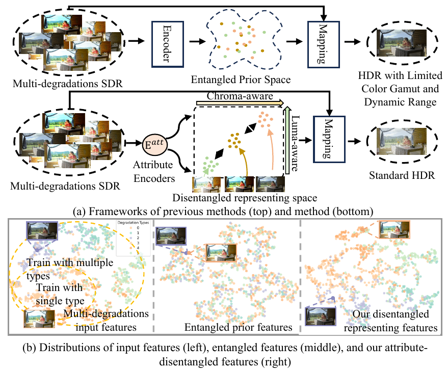
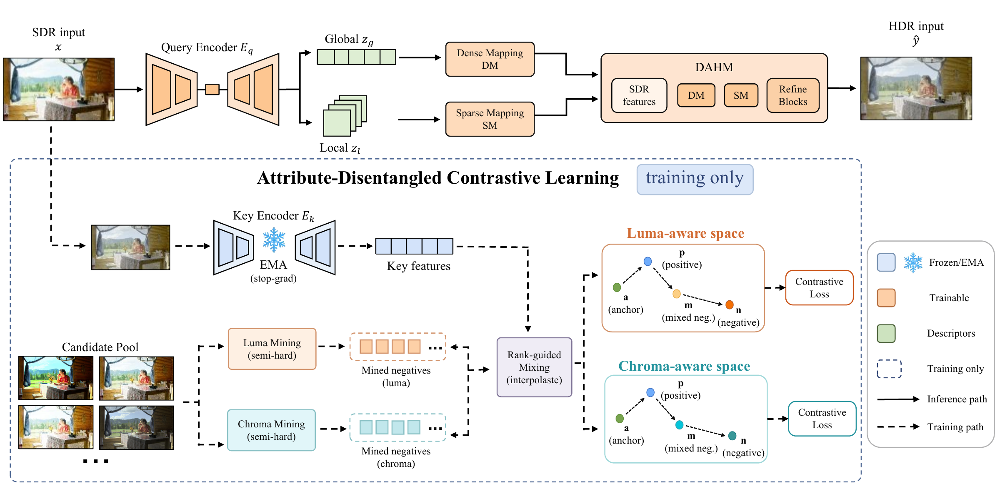
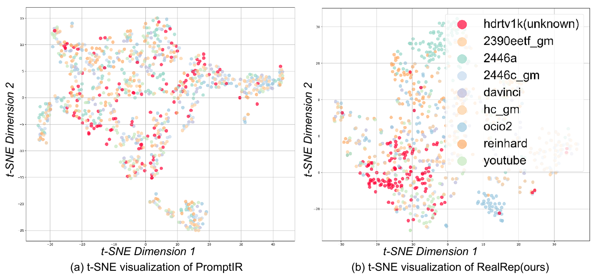
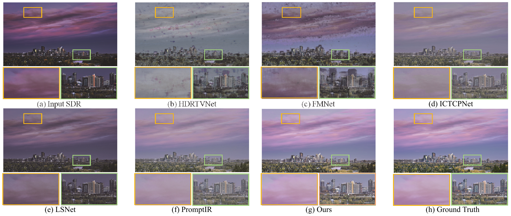
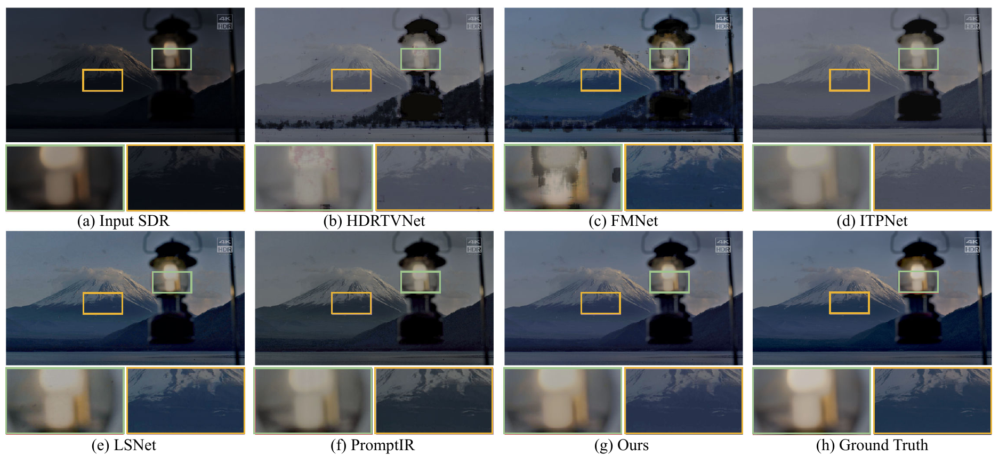
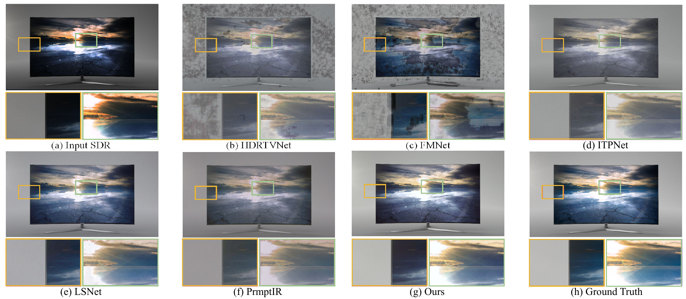
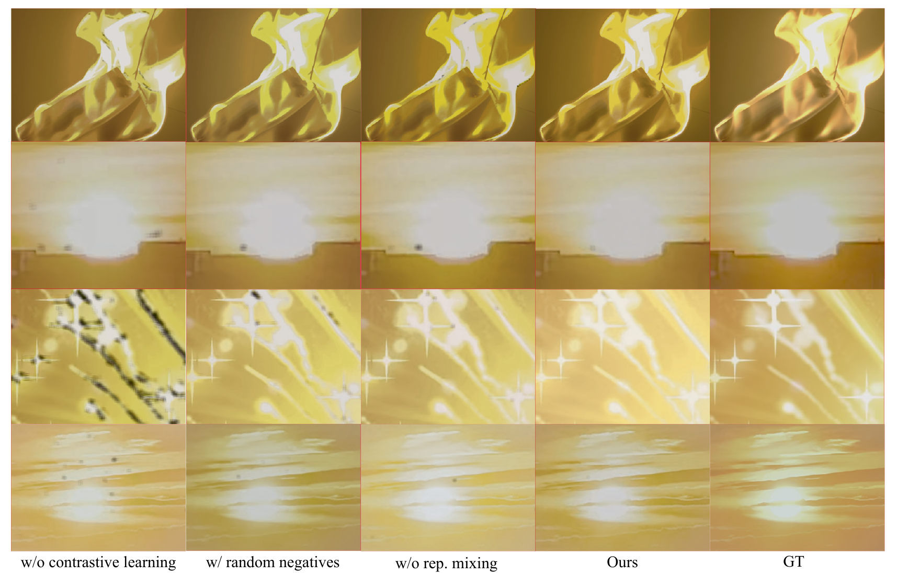
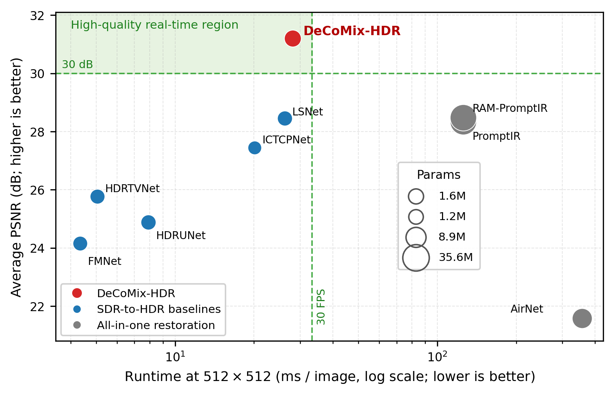

Abstract
Generalized HDR reconstruction under diverse SDR styles
High-Dynamic-Range Wide-Color-Gamut technology is becoming increasingly widespread, driving a growing need for converting Standard Dynamic Range content to HDR. Existing methods primarily rely on fixed tone mapping operators, which struggle to handle the diverse appearances and degradations commonly present in real-world SDR content.
We propose DeCoMix-HDR, a generalized SDR-to-HDR framework that learns attribute-disentangled degradation representations to improve robustness across diverse SDR styles. DeCoMix-HDR introduces luma-/chroma-aware negative mining to select informative semi-hard negatives according to attribute-level degradation differences, and further performs rank-guided representation mixing to synthesize harder negatives near the contrastive decision boundary. The learned degradation representations guide a lightweight degradation-adaptive HDR mapping network for robust SDR-to-HDR reconstruction.
Motivation
Luminance and chrominance degradations are coupled but not identical
Fixed tone-mapping assumptions fail to cover the broad appearance variations of real-world SDR content.
Luminance and chrominance statistics vary together, but their degradation-wise trends differ.
A single degradation factor cannot capture attribute-specific responses needed for robust HDR recovery.

Method
Contrastive mining and representation mixing for degradation-aware HDR mapping

Attribute Encoding
A UNet-based encoder extracts global and local degradation descriptors from the SDR input.
Luma/Chroma Mining
Semi-hard negatives are selected using attribute-aware luminance and chrominance degradation differences.
Rank-guided Mixing
Mined negatives are interpolated in representation space to densify supervision near the boundary.
HDR Reconstruction
The learned degradation representation guides lightweight adaptive SDR-to-HDR mapping.
Representation Analysis
Structured feature space for known and unknown degradations

Disentangled degradation representations improve separation
Compared with prompt-based restoration features, DeCoMix-HDR yields a more organized embedding space, where known and unknown degradation styles are more clearly distinguished.
- Unknown degradations are less scattered in the learned representation space.
- Attribute-aware contrastive supervision improves cluster compactness.
- The representation structure supports robust degradation-adaptive HDR mapping.
Visual Results
Robust reconstruction across diverse SDR degradations

Cleaner highlights and more faithful color expansion
Across known degradation types, DeCoMix-HDR produces more stable HDR/WCG outputs with smoother luminance transitions, fewer artifacts around highlight boundaries, and more natural color rendering.
- Reduced over-exposure and banding in high-luminance regions.
- More consistent chrominance recovery under different SDR styles.
- Outputs remain visually closer to the HDR reference.
Better generalization to unseen SDR distributions
For unknown degradation settings, fixed tone-mapping based methods often produce desaturated colors or unstable local contrast. The learned degradation representation allows DeCoMix-HDR to adapt to unseen SDR appearances more reliably.
- Maintains local structures under challenging SDR styles.
- Improves color vividness without introducing severe artifacts.
- Generalizes better beyond training degradation distributions.


Consistent perceptual improvements across scenes
The visual comparisons show that DeCoMix-HDR improves both global tone reproduction and local detail recovery. The gains are especially visible in sky, water, highlight, and saturated color regions.
View full-resolution figureAblation Visualization
Each contrastive component improves visual stability
Mining and mixing jointly improve reconstruction
The ablation results compare variants without contrastive learning, with random negatives, and without rank-guided representation mixing. The full DeCoMix-HDR model produces clearer highlight structures, reduced noise in smooth regions, and more faithful color transitions.
- Luma-/chroma-aware mining provides stronger attribute-level supervision.
- Rank-guided representation mixing synthesizes harder boundary negatives.
- The full model delivers the most stable HDR/WCG reconstruction.

Efficiency
High-quality real-time SDR-to-HDR conversion
DeCoMix-HDR contains only 1.209M parameters and reaches 35.56 FPS at 512×512 resolution. It is the only compared method located in the high-quality real-time region, achieving over 30 dB PSNR while satisfying the 30 FPS threshold.
